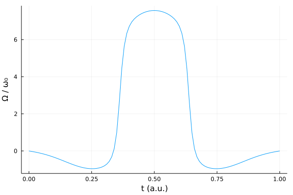
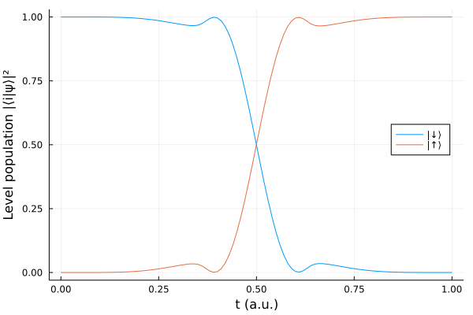

Two-level system
We consider the following simple two-level system Hamiltonian
\[H(t) = -\frac{\omega_0}{2}\sigma_z + \Omega(t)\sigma_x.\]
using Sisyphus
using QuantumOptics
using Flux, DiffEqFlux
using Plots
using Random
using ProgressMeter
ProgressMeter.ijulia_behavior(:clear)We use a dense neural network with three hidden layers to represent our parameterized pulse $\Omega(t)$ and constrain it to be an even function of time.
n_neurons = 15
Random.seed!(0)
ann = FastChain(FastDense(1, n_neurons, tanh),
FastDense(n_neurons, n_neurons, tanh),
FastDense(n_neurons, n_neurons, tanh),
FastDense(n_neurons, 1))
θ = Vector{Float64}(initial_params(ann))
println("Number of parameters: ", length(θ))
Ω(params, t) = (ann([t - t0], params)[1] + ann([t1 - t], params)[1]) / 2.0Number of parameters: 526We also define a boundary condition that constraints the pulse to be zero at initial and final times.
(t0, t1) = (0.0, 1.0)
cost = CostFunction((x,y) -> 1.0 - abs2(x'*y), p -> Ω(p, t0)^2 + Ω(p, t1)^2)Our target unitary performs a transfer of population between the two levels $|\downarrow\rangle$ and $|\uparrow\rangle$. In this case, it is sufficient to define a transformation on only one of the states since the transformation for the other state is implied by the unitarity.
bs = SpinBasis(1//2)
trans = StateTransform(spindown(bs) => spinup(bs))H = Hamiltonian(-0.5*sigmaz(bs), [sigmax(bs)], Ω)
prob = QOCProblem(H, trans, (t0, t1), cost)
@time sol = solve(prob, θ, ADAM(0.05); maxiter=500)[32mProgress: 100%|█████████████████████████████████████████| Time: 0:03:43[39m
[34m distance: 5.450727475431183e-5[39m
[34m constraints: 4.548351191997502e-7[39m
255.495667 seconds (406.28 M allocations: 38.566 GiB, 66.92% gc time, 23.98% compilation time)ts = t0:t1/100:t1
plot(ts, [Ω(sol.params, t) for t in ts])
plot!(xlabel="t (a.u.)", ylabel="Ω / ω₀", legend=false)
We also run schroedinger_dynamic from QuantumOptics.jl to present how the system evolved over time and how the level population changed.
tout, psit = schroedinger_dynamic(ts, spindown(bs), H, sol.params)
plot(tout, real(expect(dm(spindown(bs)), psit)), label="|↓⟩")
plot!(tout, real(expect(dm(spinup(bs)), psit)), label="|↑⟩")
plot!(xlabel="t (a.u.)", ylabel="Level population |⟨i|ψ⟩|²", legend=:right)